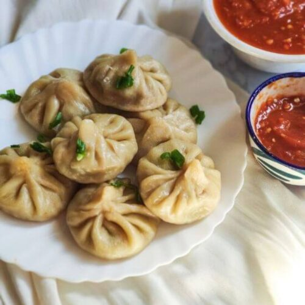
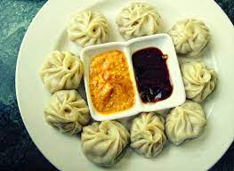

Momo is a type of steamed dumpling with some form of filling. Momo has become a traditional delicacy in Nepal, Tibet, as well as among Nepalese and Tibetan communities in Bhutan, as well as people of Ladakh, Northeast India and Darjeeling regions of India

Momo are traditionally steamed but can also be deep fried or pan fried. Momo is usually served with chili garlic sauce and pickled daikon in Tibet whereas in Nepal popular dipping sauces include tomato based chutneys or sesame based sauces. (locally called chutney/achhar[9]), normally made with tomato as the base ingredient. Soup momo or mok-thuk (Tibetan) is another way to serve momos where the momos are either cooked in broth for a type of dumpling soup or steamed momos are added to broth.
Momo Maker VaibhaV TM
ClicK Here
Author History